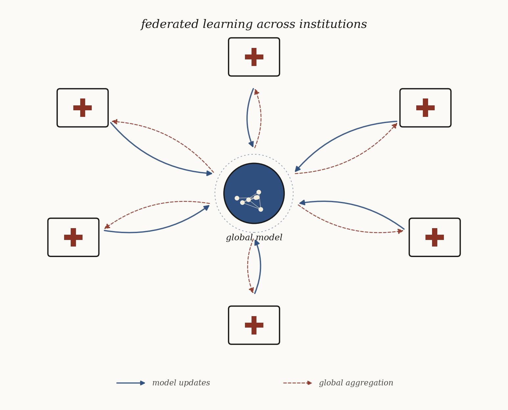

UNiCA: deep learning for cancer treatment imaging
PhD work as part of the Unified Network for International Cancer Advancement, an EU consortium developing imaging methodologies to support cancer treatment decisions across collaborating institutions.